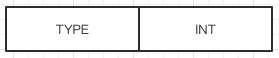

八、Redis 持久化--RDB（一）
Redis 是一个内存数据库，为了保证数据不丢失，持久化就显得尤为重要了。Redis 有两种持久化方法:RDB方式，RDB保存某一个时间点之前的数据；另一种为AOF方式，AOF保存的是Redis服务器端执行的每一条命令。
通过info命令查看 redis服务端记录的相关持久化状态信息：
127.0.0.1:6379>info
# Persistence
loading:0 //是否正在加载RDB文件内容
rdb_changes_since_last_save:2 //最后一次保存之后改变的键的个数
rdb_bgsave_in_progress:0 //是否正在后台执行RDB保存任务
rdb_last_save_time:1540371552 //最后一次执行RDB保存任务的时间
rdb_last_bgsave_status:ok //最后一次执行RDB保存任务的状态
rdb_last_bgsave_time_sec:0 //最后一次执行RDB保存任务消耗的时间
rdb_current_bgsave_time_sec:-1 //如果正在执行RDB保存任务，则为当前RDB任务已经消耗的时间，否则为-1
rdb_last_cow_size:6631424 //最后一次执行RDB保存任务消耗的内存
aof_enabled:0 //是否开启了AOF功能aof_rewrite_in_progress:0 //是否正在后台执行AOF重写任务
aof_rewrite_scheduled:0 //是否等待调度一次AOF重写任务。如果触发了一次AOF重写， 但是后台正在执行RDB保存任务时会将该状态置为1
aof_last_rewrite_time_sec:-1 //最后一次执行AOF重写任务消耗的时间
aof_current_rewrite_time_sec:-1 //如果正在执行AOF重写任务，则为当前该任务已经消耗的时间，否则为-1
aof_last_bgrewrite_status:ok //最后一次执行AOF重写任务的状态
aof_last_write_status:ok //最后一次执行AOF缓冲区写入的状态（服务端执行命令时会开辟一段内存空间将命令放入其中，然后从该缓冲区中同步到文件。该状态标记最后一次同步到文件的状态
aof_last_cow_size:0 //最后一次执行AOF重写任务消耗的内存
RDB 持久化方式
RDB持久化方式是保存一个时间点的快照。
RDB快照有两种触发方式
- 配置参数，在配置文件中写入
save 60 1000，则在60秒内如果有1000个key发生变化，就出发一次RDB快照执行。 - 通过客户端执行 bgsave 命令显式的触发一次RDB快照的执行。
bgsave执行流程如下图所示：

在客户端输入 bgsave 命令后，Redis调用 bgsaveCommand 函数，该函数fork一个子进程执行 rdbSave 函数进行实际的快照存储工作，而父进程可以继续处理客户端请求。当子进程退出后，父进程调用相关回调函数进行后续处理。
RDB文件结构
RDB 整体文件结构如下图所示：

- 头部5字节固定为“REDIS”字符串
- 4字节的RDB版本号（RDB_VERSION，注意不是Redis的版本号），当前RDB版本号为9，填充为4字节之后为0008。
辅助字段AUX_FIELD_KEY_VALUE_PAIRS，辅助字段可以标明以下信息
字段名称 字段值 redis-ver 5.0.04 redis-bits 64/32 ctime 当前时间戳 used-mem redis占用内存 aof-preamble 是否开启aof/rdb混合持久化 repl-stream-db 主从复制相关 repl-id 主从复制相关 repl-offset 主从复制相关 数据库序号：指明数据需要存放到哪个数据库
当前数据库键值对散列表的大小，这样在加载时可以直接将散列表扩展到指定大小，提升加载速度。
当前数据库过期时间散列表的大小
Redis中具体键值对的存储
RDB文件结束标志
8字节校验码
加载RDB文件的时候怎么区分加载的是辅助字段还是数据库序号或者是其他类型呢？其实在RDB每一部分之前都有一个类型字节，在Redis中称为opcodes，opcodes如下所示：
#define RDB_OPCODE_MODULE_AUX 247 //module相关辅助字段
#define RDB_OPCODE_IDLE 248 //lru空闲时间
#define RDB_OPCODE_FREQ 249 //lfu频率
#define RDB_OPCODE_AUX 250 //辅助字段类型
#define RDB_OPCODE_RESIZEDB 251 //RESIZEDB，即上文中介绍的5和6两项
#define RDB_OPCODE_EXPIRETIME_MS 252 //毫秒级别过期时间
#define RDB_OPCODE_EXPIRETIME 253 //秒级别过期时间
#define RDB_OPCODE_SELECTDB 254 //数据库序号，即第4项
#define RDB_OPCODE_EOF 255 //结束标志，即第8项
带opcodes 的RDB 结构表显形式

下面我们看下 键值对的结构，如下图所示

- EXPIRE_TIME: 可选。根据具体的键是否有过期时间决定，该字段固定为8个字节。
- LRU或者LFU：可选。根据配置的内存淘汰算法决定。LRU算法保存秒级别的时间戳，LFU算法只保存counter的计数（0～255，1 字节）
VALUE_TYPE：值类型。Redis数据类型和底层编码结构

KEY：键。键保存为字符串，下文会详细介绍字符串的保存形式。
VALUE：值。值根据数据类型和编码结构保存为不同的形式
RDB键的保存形式
redis中键都是字符串，比较常见的保存方法如下图所示：
前边LENGTH字段表示字符串长度，后边STRING即具体的字符串内容。
Redis中的LENGTH是个变长字段，通过首字节能够知道LENGTH字段有多长，然后读取LENGTH字段可以知道具体的STRING长度。LENGTH字段类型如下:
00xxxxxx #表示LENGTH字段占用1个字节，STRING的长度保存在后6个比特中，最长为63。
01xxxxxx xxxxxxxx #表示LENGTH字段占用2个字节，而STRING的长度保存在后14个字节中，最长为16383
10000000 xxxxxxxx xxxxxxxx xxxxxxxx xxxxxxxx 表示LENGTH字段共占用5个字节，正好是一个无符号整型，STRING的长度最长为UINT32_MAX。
10000001 xxxxxxxx xxxxxxxx xxxxxxxx xxxxxxxx xxxxxxxx xxxxxxxx xxxxxxxx xxxxxxxx #如果STRING长度大于UINT32_MAX，则首字节表示为10000001，LENGTH字段共占用9个字节。后8字节表示实际长度，为一个LONG类型。
RDB中对字符串的保存还有两种优化形式：
一种是尝试将字符串按整型保存
 字符串按整型保存 TYPE字段其实类似图20-5中的LENGTH字段，LENGTH字段首字节头两个比特取值为00、01、10这种类型，TYPE字段首字节头两个比特取值为11，后6个比特表明存储的整型类型，如下所示：
11000000 xxxxxxxx INT8 取值范围[-128,127] 11000001 xxxxxxxx xxxxxxxx INT16 取值范围[-32768,32767]
11000010 xxxxxxxx xxxxxxxx xxxxxxxx xxxxxxxx INT32 取值范围[-2147483648 , 2147483647]一种是通过将字符串进行LZF压缩之后保存。

RDB LZF保存形式 TYPE首字节头两个比特仍然为11，后六个比特是000011。COMPRESS_LEN表明压缩之后的长度，该字段保存形式同图20-5中LENGTH字段的保存。LZF还保存了一个ORIGINAL_LEN字段，该字段记录压缩之前原始字符串的长度，保存形式也与图20-5中LENGTH字段的保存相同。最后一个DATA字段保存具体的LZF压缩之后的数据，数据长度从COMPRESS_LEN字段取得。
RDB 值保存形式
值类型有如下图所示：

其中字符串类型的保存于 上面的《键的保存形式》相同，其余几种值的保存形式各不相同
列表类型的保存
列表在Redis中编码为 quicklist结构，从整体看是一个双向链表，但链表的每个节点在Redis中编码为zipList结构，ziplist结构在一块连续的内存中保存，并且保存时可以选择进行LZF压缩或者不压缩。据此，RDB 保存列表类型的结构如图所示：
ziplist未压缩

ziplist压缩：
如果ziplist未压缩，每个ziplist按照字符串保存，如果ziplist进行了压缩，则按照下图方式进行保存

集合类型的保存
集合类型在Redis中有两种编码方式：一种为intset，另一种为Hash。
intset在Redis中也是一块连续的内存，所以intset的保存比较简单，直接将intset按字符串保存。
如果编码为Hash，保存结构如下图所示：

第一个字段为字典的大小，接下来逐字段保存字典的键。为什么只保存键呢？其实集合类型使用散列表保存时只使用了键，所有的值都保存为NULL，所以此处只需要保存散列表的键。
有序集合类型的保存
有序集合类型在Redis中也有两种编码方式：一种为ziplist，另一种为skiplist。如果编码为ziplist，即将ziplist整体作为一个字符串保存。所以我们重点看编码为skiplist的保存方式
第一个字段为skiplist包含的元素个数，接着分别按元素和元素的分值依次保存。元素保存为字符串，元素分值保存为一个双精度浮点数类型（固定为8个字节）
散列类型的保存
散列类型也有两种编码方式：一种为ziplist，一种为Hash。ziplist 编码方式的保存同有序集合。重点看散列类型按Hash编码时的保存方式。

第一个字段为散列表的大小，然后依次保存键值对，键值都保存为字符串类型。
Stream类型的保存
Stream保存为RDB文件时整体格式如图所示：

其中具体的结构体介绍，如listpack，消费组等的介绍参考六、Redis 数据流 stream 。其中保存消费组的PEL时并没有保存相关消费者的信息，而是在加载完消费者之后，从消费者的PEL中查找并更新消费组PEL的相关信息。
RDB 实例
我们查看一下空的 redis 库是怎样的
127.0.0.1:6379>flushall
ok
127.0.0.1:6379>bgsave
Background saving started
➜ redis xxd dump.rdb
00000000: 5245 4449 5330 3030 39fa 0972 6564 6973 REDIS0009..redis
00000010: 2d76 6572 0535 2e30 2e38 fa0a 7265 6469 -ver.5.0.8..redi
00000020: 732d 6269 7473 c040 fa05 6374 696d 65c2 s-bits.@..ctime.
00000030: 1a45 075f fa08 7573 6564 2d6d 656d c210 .E._..used-mem..
00000040: 0910 00fa 0c61 6f66 2d70 7265 616d 626c .....aof-preambl
00000050: 65c0 00ff fe39 f4d9 2732 2a22 e....9..'2*"
➜ redis od -cx dump.rdb
0000000 R E D I S 0 0 0 9 372 \t r e d i s
4552 4944 3053 3030 fa39 7209 6465 7369
0000020 - v e r 005 5 . 0 . 8 372 \n r e d i
762d 7265 3505 302e 382e 0afa 6572 6964
0000040 s - b i t s 300 @ 372 005 c t i m e 032
2d73 6962 7374 40c0 05fa 7463 6d69 c265
0000060 032 E \a _ 372 \b u s e d - m e m 302 020
451a 5f07 08fa 7375 6465 6d2d 6d65 10c2
0000100 \t 020 \0 372 \f a o f - p r e a m b l
1009 fa00 610c 666f 702d 6572 6d61 6c62
0000120 e 300 \0 377 376 9 364 331 ' 2 * "
c065 ff00 39fe d9f4 3227 222a
0000134
- RDB 文件用于保存和还原Redis服务器所有的数据库中的所有的键值对数据
- save命令有服务器进行直接执行保存操作，但是会阻塞服务器
- bgsave由紫禁城执行保存操作，不会阻塞服务器
- 服务器状态中会保存所有用save选项设置的保存条件，当人以一个保存条件被满足时，服务器会自动执行 bgsave 命令
- RDB 文件是一个经过压缩的二进制文件，由多个部分组成
- 对于不同类型的键值对，RDB文件会使用不同的方式来保存它们。


Copyright © 2015 Powered by MWeb, Theme used GitHub CSS.